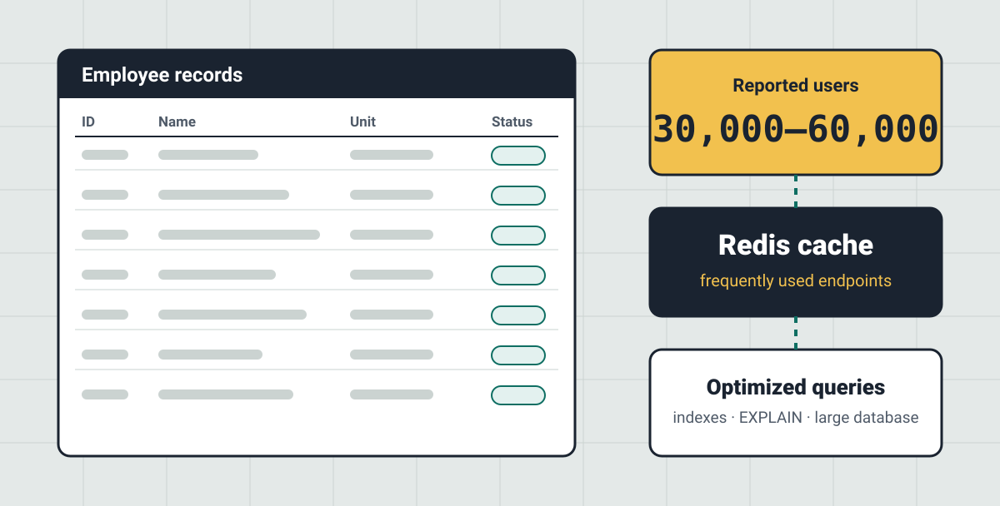

SIK, personnel information system
Database and query optimization, Redis caching and production support for a nationwide HR system.
See details
- Context
- A production HR system for a government agency, with a large, active database and approximately 30,000–60,000 users nationwide.
- Role & scope
- Backend developer responsible for maintenance, API development and production troubleshooting.
- Technical approach
- MySQL query and database optimization, with Redis and PHPRedis caching on frequently accessed endpoints, including SSO-related functionality.
- Key decisions
- Applied caching selectively to frequently used endpoints alongside database and query optimization.
- Work delivered
- Backend and API changes, cache integration and ongoing production support.
- Project status
- Maintenance
Redis · PHPRedis · MySQL · Query optimization